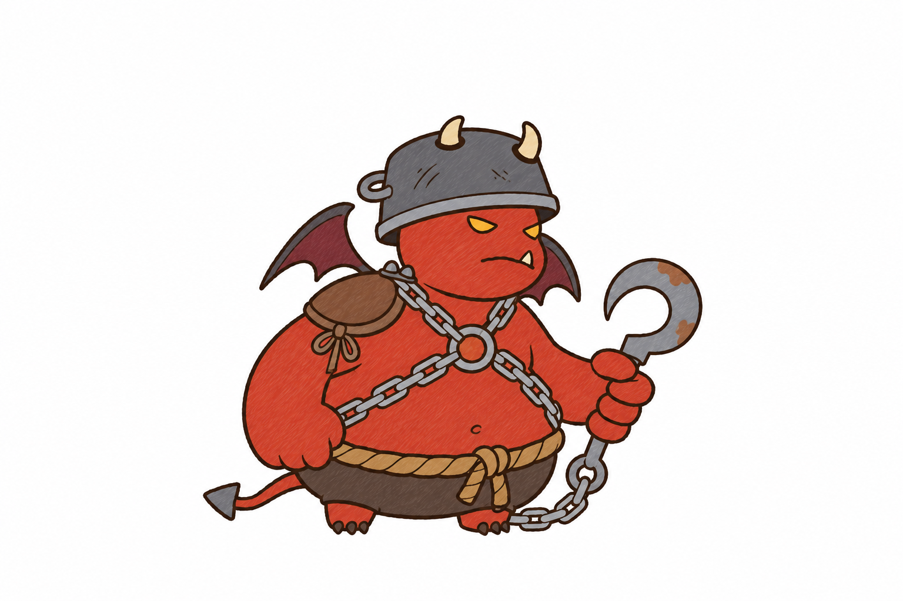

Quỷ xích DẠNG 1 NON (tướng 5 đảo Kim) — rig và animation
Cùng xương, lưới, clip với dạng 2 (quỷ giáp kín); đổi tỉ lệ ở rig (đầu × 1,25, cánh × 0,72, móc × 0,8) và da theo concept A (quỷ con đội nồi
sắt). Khối xám là chỗ đối thủ (đứng xa 1,9 lần chiều cao) để thấy phần code game làm. Chưa có VFX (lửa xích, vệt lửa + khói, vòng trói, cột lửa,
bụi): làm ở bước vào game. Dạng 2: quy_xich_xem_rig.html. Spine Web Player: quy_xich_non/rig/xem.html.

Concept A dạng non đã duyệtRig ghép xong, khung 0 idle (bỏ lòng nồi dưới vành cho lộ mắt; hai sừng nhô lên từ sau nồi)Chiêu cuối: giơ móc, quay xích ba vòng nhanh dần, ném, trói, giữ xích căng, cột lửa (VFX), thả, giật vềChiêu mana: quay xích qua đầu, ném; móc + xích bay tới đối thủ, găm, giật vềĐánh thường: bay vọt tới, giơ móc, bổ xuống đầu đối thủ, nhảy lùi vềRa sân: bay vào, khựng, rơi thẳng xuống, móc đập đấtĐứngĐiTrúng đòn: nồi nảy khỏi đầuChết: hất lộn, nồi văng, nằm ngửa, mờ dần